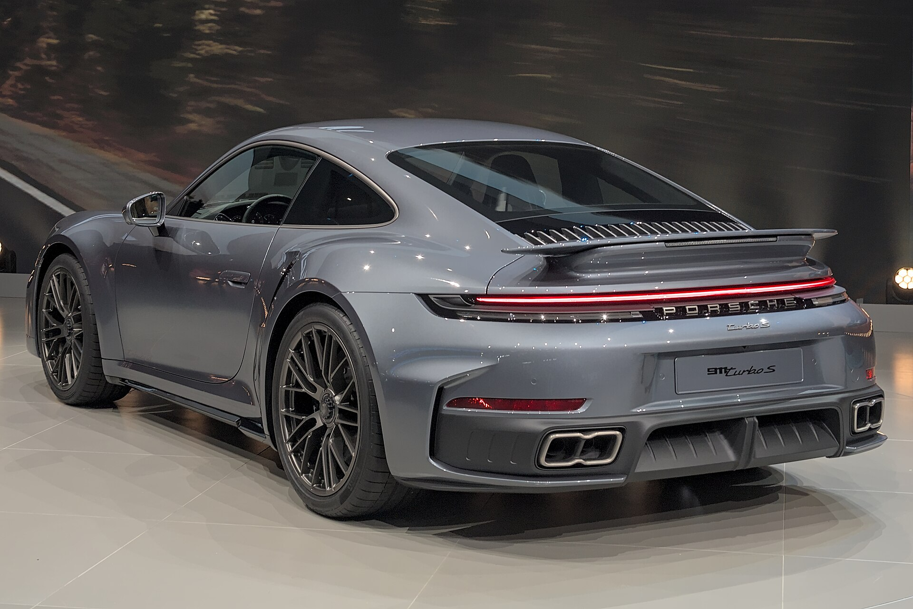

3.6L Twin-Turbo Flat-6 T-Hybrid
Porsche 911 Turbo S (992.2)
The daily-usable supercar benchmark combining a 3.6-liter twin-turbocharged T-Hybrid flat-six with active aerodynamics and carbon-ceramic brakes.
0-100 km/h2.5 s
Top Speed320 km/h
Power711 PS